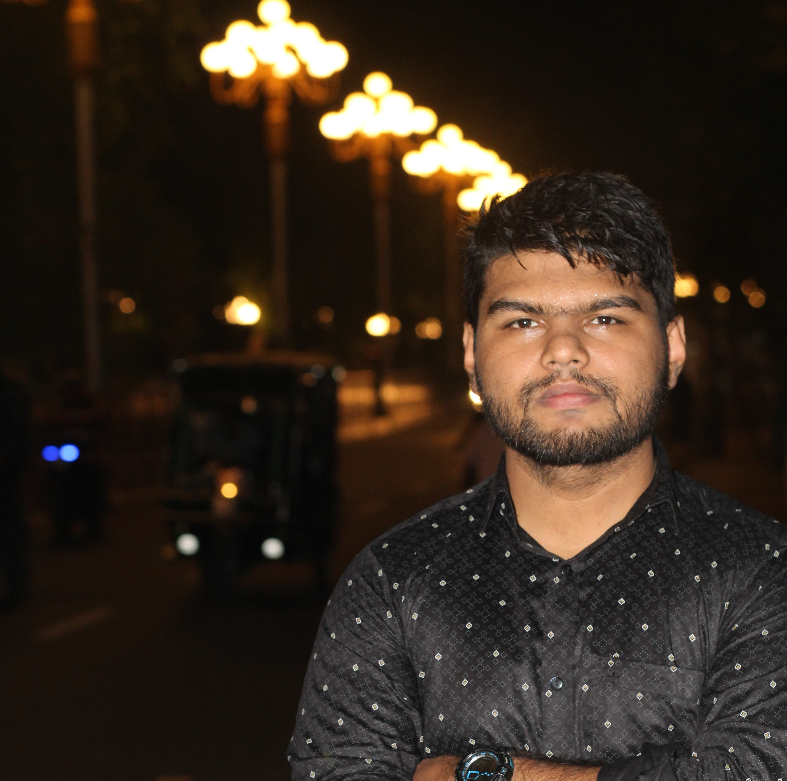

Research
Exoplanet atmospheres, strong gravitational lensing, dark matter, scientific computing, and publications.
Open Research →I work across exoplanet atmospheres, strong gravitational lensing, dark matter, observational astronomy, and astronomy education.
My background combines Electrical and Electronic Engineering with astronomy research, scientific computing, Astronomy Olympiad training, and open educational resource development. Since 2018, I have also served as Bangladesh Team Leader for the International Olympiad on Astronomy and Astrophysics.

The main parts of the portfolio are connected here, so you can move directly to research, Olympiad work, teaching resources, or personal background.
Exoplanet atmospheres, strong gravitational lensing, dark matter, scientific computing, and publications.
Open Research →IOAA leadership, BDOAA training, teaching topics, Olympiad notes, outreach, and astrophotography.
Open Olympiad page →An open observational-astronomy book with a Book Reading Guide and interactive Knowledge Graph.
Explore Star Charts 101 →Education, experiences, astronomy journey, interests, and the broader story behind my work.
Read My Background →A compact overview of my academic background, interests, Olympiad work, and teaching.
B.Sc. in Electrical and Electronic Engineering, 2023
Bangladesh Army University of Engineering & Technology (BAUET).
I develop Olympiad-focused astronomy lectures, notes, solved problems, and observational resources for students preparing for national and international competitions.
Browse my notes →Selected scientific and educational projects. Detailed research methods, results, and publication links are available on the Research page.

Forward modeling planetary atmospheres with varying metallicity and C/O ratio using ARCiS and synthetic observations for space telescopes.

Strong-lens mass modeling with lenstronomy, culminating in my first-author/co-first-author A&A publication on environment and the internal structure of massive elliptical galaxies.

My 2020 LEAPS summer research at Leiden University used high-resolution transmission spectroscopy to investigate atmospheric species in the hot Jupiter WASP-76b.

An open observational-astronomy book for star-chart reading and Olympiad preparation, now paired with an interactive Book Reading Guide and Knowledge Graph.

A Bengali astronomy textbook developed for Olympiad preparation and broader mathematical and physical astronomy learning.
Learn from the book, then explore the links. The dedicated webpage combines the current book structure with an interactive knowledge graph showing how sky maps, coordinate systems, projections, celestial navigation, telescope observation, magnitude estimation, and IOAA observation tasks connect.
Long-form astronomy writing, book projects, and student resources elsewhere in the portfolio.
A reader-focused Bengali astronomy article on lunar libration, including longitude, latitude, orbital geometry, and mathematical explanation.
Read the article →A growing collection of preparation notes, problem-solving resources, and lecture material developed for Astronomy Olympiad students.
Browse the notes →You can reach me by email or through the professional and social links above.